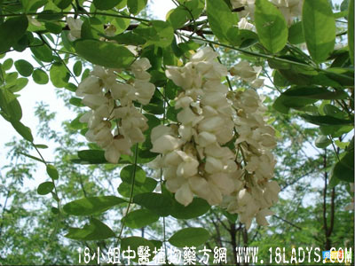

槐花米(中药材植物名:白槐)(植物科目:蝶形花科)

别名：白槐。
植物名：槐。
生长环境：本品为落叶乔木。生长于山野间或栽培于庭院作观赏树。
分布：我国南北各省，在湖北西部及四川一带极普遍，华南多人栽培。
入药部分：花。
采集期：8、9月间。
自采地点：家种。
性味：性凉、味微苦。
功能：凉血。
主治、用量和用法：1、治痔疮下血：干用5钱至1两，清水煎服，并用适量，煎水熏洗肛门；2、治大肠湿热：干用5钱至1两，清水煎服，或加蜜糖冲服。
附录：（槐树叶）治痔疮出血：干用8两，煎水熏洗肛门。
（方歌）性凉味苦槐花米，能医痔疮与下血，大肠湿热更能除，煎水冲糖功效越，槐叶煎水熏肛门，痔疮出血亦能愈。